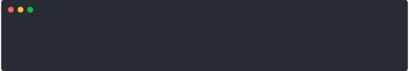

![]()
Lyrics to the title theme of the US TV show, Pretty Little Liars. The song is called Secrets, taken from the fabulous Thirteen Tales of Love and Revenge album by The Pierces
Anytime you write R code whose output needs to be understood by a human being, it is an act of kindness to spend a little time making sure that the output shown to the human being properly communicates with that human. As a consequence of this, you often find yourself needing to write information to the R console, just to cater to those precious human sensibilities. Perhaps the simplest way to do this is to use the cat() function. It’s a simple tool and it gets the job done in most cases.
For example, consider the use case for the antagonist character “A” from Pretty Little Liars, whose stalking and threats were delivered mostly via text message. Had she used R to craft her threatening text messages, she could have written code like this:
wait <- function(seconds = 2) {
Sys.sleep(seconds)
}
send_cat_threat <- function() {
cat("Dead girls walking.\n"); wait()
cat("--A.\n")
}Equipped with a function that specifies her threat, complete with a dramatic pause for effect, she’s ready to go. When her unwitting victim does something to trigger the send_cat_threat() function, a two part message is displayed on the console. The first part shows up immediately
Dead girls walking.and after a two second delay, her call sign is revealed
Dead girls walking.
--A.It’s not too difficult to imagine what this message might look like at the R console, but where’s the fun in that? Thanks to the asciicast package (Csárdi et al. 2019), there’s no need to leave anything to the imagination, and we can see the malevolent message in screencast form:

The ominous text messages used in this post are taken from Pretty Little Liars. This one is from episode two in season one. It’s important that one documents ones sources, right?
Using cat() to craft messages works perfectly well for simple text communication, but sometimes you want something that looks a little fancier. After all, if the big picture plan here is to impersonate a dead teenager and terrorise her friends - and for some reason you’ve chosen R to do so - you might as well put a little effort into the details, right?
Meet the cli package
One thing I love about the R community is that if you search long enough you’ll find that someone else has already written a package that solves the problem you’re facing. If your problem is “how to craft nicely formatted messages” then you’ll be delighted to learn that many wonderful things become possible if you have the cli package (Csárdi 2021a) as your talented assistant. To craft a beautiful command line interface (CLI) of her very own, the first thing A will need to do is load the package:
library(cli)Once this is done, it is a very trivial task for A to write the same threatening text message using cli_text()…
send_cli_threat <- function() {
cli_text("Dead girls walking."); wait()
cli_text("--A.")
}
send_cli_threat()
…which is nice and all, but it doesn’t make much of a case for using cli. Stalking and threatening is busy work, and I’d imagine that A would want a more compelling justification before deciding to switch her evil workflow. However - much like A herself - the R console has many dark secrets, and fancier tricks than this are possible once you know how to expose them using cli.
Using the status bar
One piece of magic that I have wondered about for a long time is how fancy progress bars work: often when you’re doing something that takes a long time, you’ll see an ASCII progress bar rendered in text on the screen, which suddenly vanishes once the process is complete. How exactly does this work? Normally you can’t “unprint” a message from the console, so how is it possible for the progress bar to update without leaving an ugly trail of earlier messages behind it?
While teaching myself cli, I found the answer. The most recent line of text generated at the terminal is speciall. It’s called the status bar: the state of the status bar can be manipulated, and the cli package provides a neat toolkit for doing so. So let’s say I were trying to convince A to switch to the cli tools. Right now, she’s writing a function that will send a four-part message, using cli_text() because I’ve at least convinced her to try the new tools:
message_scroll <- function() {
cli_text("You found my bracelet."); wait()
cli_text("Now come find me."); wait()
cli_text("Good luck bitches."); wait()
cli_text("-A"); wait()
}
message_scroll()When her victim triggers this message the lines will appear on screen, one after the other with an appropriate dramatic pause separating them. The victim might see something that looks like this:
The problem – when viewed from an evil point of view – is that this message stays on screen after delivery.1 The victim has time to think about it, take a screenshot to show her friends, that kind of thing. Wouldn’t the gaslighting be so much more effective if she were to send the message piece by piece, each part disappearing as the next one appears, only to have the whole thing vanish without a trace and leaving the victim wondering if she imagined the whole thing? This is where the status bar comes in handy. Here’s how it would work:
message_inline <- function() {
id <- cli_status("")
cli_status_update(id, "You found my bracelet."); wait()
cli_status_update(id, "Now come find me."); wait()
cli_status_update(id, "Good luck bitches."); wait()
cli_status_update(id, "-A"); wait()
cli_status_clear(id)
}The first line in this function uses cli_status() to create a blank message on the status bar, and returns an identifier that refers to the status bar. The next four lines all use cli_status_update() to overwrite the current state of the status bar, and then pause dramatically for two seconds. In a final act of malice, the last line in the function clears the status bar using cli_status_clear(), leaving nothing except a blank space behind. So what the victim sees is something more like this:
message_inline()This message was sent to Aria in episode 10 of season one. I’m sure it is deeply important to everyone that I mention this.
Creating spinners
The ability to control the status bar opens up a world of new possibilities. Progress bars are one such possibility, but the progress package (Csárdi and FitzJohn 2019) already does this nicely, and in any case I suspect that A might be more intrigued by the possibility of spinners, since they just spin and spin and give the victim no clue about when the process is going to end. Much more appealing when the developer doesn’t know (or doesn’t want to reveal) when the wait will end. The cli package has a nice makes_spinner function that serves this purpose. Here’s an example:
spinny <- make_spinner(
which = "dots2",
template = "{spin} It's not over until I say it is."
)The which argument is used to choose how the spinner would look, and the template argument is used to define how the “spinny bit” is placed relative to the rest of the text. The spinny object includes functions to update the state of the spinner (in this case spinny$spin() would be that function), and a function to clear the spinner from the status bar. So here’s how A might define a function that uses a spinner to keep the victim in suspense…
theatrics <- function(which) {
# define the spinner
spinny <- make_spinner(
which = which,
template = "{spin} It's not over until I say it is."
)
# update the spinner 100 times
for(i in 1:100) {
spinny$spin()
wait(.05)
}
# clear the spinner from the status bar
spinny$finish()
# send the final part of the message
cli_alert_success("Sleep tight while you still can, bitches. -A")
}Here’s what happens:
theatrics("dots2")This message was sent to all four of the liars in the final episode of season one. I don’t think A used a spinner though, which feels like a missed opportunity to me
Setting which = "dots2" is only one possibility. There are quite a lot of different spinner types that come bundled with the cli package, and I’d imagine A would want to look around to see which one suits her needs. Personally, I’m a fan of hearts:
theatrics("hearts")To see the full list use the list_spinners() function:
list_spinners() [1] "dots" "dots2" "dots3"
[4] "dots4" "dots5" "dots6"
[7] "dots7" "dots8" "dots9"
[10] "dots10" "dots11" "dots12"
[13] "line" "line2" "pipe"
[16] "simpleDots" "simpleDotsScrolling" "star"
[19] "star2" "flip" "hamburger"
[22] "growVertical" "growHorizontal" "balloon"
[25] "balloon2" "noise" "bounce"
[28] "boxBounce" "boxBounce2" "triangle"
[31] "arc" "circle" "squareCorners"
[34] "circleQuarters" "circleHalves" "squish"
[37] "toggle" "toggle2" "toggle3"
[40] "toggle4" "toggle5" "toggle6"
[43] "toggle7" "toggle8" "toggle9"
[46] "toggle10" "toggle11" "toggle12"
[49] "toggle13" "arrow" "arrow2"
[52] "arrow3" "bouncingBar" "bouncingBall"
[55] "smiley" "monkey" "hearts"
[58] "clock" "earth" "moon"
[61] "runner" "pong" "shark"
[64] "dqpb" Showing cli messages in R markdown
Throughout this post I’ve relied on asciicast to display screencasts of the R console as animated SVG files, rather than what I might normally do and rely on regular R markdown code chunks to do the work. There’s a reason for this: the R console is a terminal, and its behaviour doesn’t always translate nicely to HTML. Part of the magic of the rmarkdown package (Xie, Allaire, and Grolemund 2018) is that most of the time it is able to capture terminal output and translate it seamlessly into HTML, and we mere mortal users never notice how clever this is. However, when dealing with cli output, we run into cases where this breaks down and the law of leaky abstractions comes into play: text generated at the R console does not follow the same rules as text inserted into an HTML document, and R Markdown sometimes needs a little help when transforming one to the other.
An important thing to remember about cli is that the text it produces is a message, so its visibility in R Markdown depends on the chunk option for messages. As long as the message option is set to TRUE, R Markdown will include them as part of the output.2 In the simplest case, R Markdown works nicely, so as long as all A wants to do is send an unformatted threat within an R Markdown document, then this works:
cli_text("I'm still here bitches, and I know everything. -A")I'm still here bitches, and I know everything. -AHowever, the moment A tries to use any fancy formatting, things will go haywire for her. For example, suppose she wanted to send the message above as a simple “alert” message using cli_alert(), which uses fancy symbols and colours in the output. It is at this point that the cracks in the R Markdown pipeline start to leak. In this case, the leak would result in the document failing to knit and an error message complaining about
PCDATA invalid Char valueIntuitively she might guess that somewhere in the R Markdown pipeline, an invalid or malformed character has been created.3 The reason this happens is that the colours and symbols used by cli, and supported in the R console, rely on ANSI escape codes, but those escape codes aren’t recognised in HTML and – apparently – they can wreak havoc when R markdown writes those characters into the HTML document. ANSI colours in R are usually generated with the help of the crayon package (Csárdi 2021b), and per the issue #24 thread that I encounter on a semi-regular basis, it can be tricky to manage the process of translating these to HTML via R Markdown.
Solving this issue requires A to jump through a few hoops. It’s annoying I know, but no-one ever said that running an unhinged stalking campaign via text messages was easy, right? Her first task is to make sure that the R Markdown document turns on crayon support:
options(crayon.enabled = TRUE)This isn’t the whole solution, however, because while that tells R Markdown to stop ignoring all the ANSI stuff, it doesn’t necessarily allow it to render ANSI sequences properly. To fix this she needs to specify the knit hooks that explicitly tell R Markdown what to do. She can do this with the help of the fansi package (Gaslam 2021), which contains an obscurely-named function sgr_to_html() that translates a subset of the ANSI control sequences to HTML, and strips out all the others. Using this, she can write an ansi_aware_handler() function that will take an input string x and return HTML output appropriate for the R Markdown context:
ansi_aware_handler <- function(x, options) {
paste0(
"<pre class=\"r-output\"><code>",
fansi::sgr_to_html(x = x, warn = FALSE, term.cap = "256"),
"</code></pre>"
)
}From there, it’s relatively easy. All she needs to do is tell knitr (Xie 2021) to use this function whenever it needs to handle output. Just for good measure she might do the same for messages, errors, and warnings:
knitr::knit_hooks$set(
output = ansi_aware_handler,
message = ansi_aware_handler,
warning = ansi_aware_handler,
error = ansi_aware_handler
)At long last she is done.4 Her campaign of bullying and cruelty can continue:
cli_alert("I'm still here bitches, and I know everything. -A")→ I'm still here bitches, and I know everything. -A
This message was sent in the pilot episode. Yes, the quotes I’ve used are all from season one: I’ve just started a rewatch of the show, so the early episodes are quite fresh in my memory!
Writing longer messages
Up to this point the threatening messages that A has been sending have been short, only one line long. In several cases the messages have been cleverly constructed so that the same line (the status bar) is used to display multiple pieces of text, but ultimately it’s still one line messaging. A needs to take a little care when she wants to branch out. Conceptually, a message should correspond to “one semantically meaningful bundle of information” that might be split over several lines. However, as far as R is concerned, each call to cli_text() creates a distinct message. To see how this might cause A some grief, here’s the letter that she sent to Aria’s mother announcing the infidelity of Aria’s father:
send_cruel_letter_piecewise <- function() {
cli_text('Your husband, Byron, is involved with another woman')
cli_text('and when I say involved I mean in a "romantic" way.')
cli_text('This is not something recent. It started before your')
cli_text('family went away to Iceland and from the look of')
cli_text('things, it may be starting up again now that you\'re')
cli_text('back. I know this is hard to hear, but it is the')
cli_text('truth. If you don\'t believe this about your husband,')
cli_text('ask your daughter. She knows all about it.')
cli_text('Sincerely,')
cli_text('A')
}
send_cruel_letter_piecewise()Your husband, Byron, is involved with another woman
and when I say involved I mean in a "romantic" way.
This is not something recent. It started before your
family went away to Iceland and from the look of
things, it may be starting up again now that you're
back. I know this is hard to hear, but it is the
truth. If you don't believe this about your husband,
ask your daughter. She knows all about it.
Sincerely,
A
This is not an ideal implementation. What A wants to send is one message spanning 10 lines not 10 separate one-line messages, but it’s the latter that she has actually implemented here. This is where the cli() function is handy: to takes an expression as input and collects all the constituent parts into a single message. This version of the function now sends a single message:
send_cruel_letter_singly <- function() {
cli({
cli_text('Your husband, Byron, is involved with another woman')
cli_text('and when I say involved I mean in a "romantic" way.')
cli_text('This is not something recent. It started before your')
cli_text('family went away to Iceland and from the look of')
cli_text('things, it may be starting up again now that you\'re')
cli_text('back. I know this is hard to hear, but it is the')
cli_text('truth. If you don\'t believe this about your husband,')
cli_text('ask your daughter. She knows all about it.')
cli_text('Sincerely,')
cli_text('A')
})
}
send_cruel_letter_singly()Your husband, Byron, is involved with another woman
and when I say involved I mean in a "romantic" way.
This is not something recent. It started before your
family went away to Iceland and from the look of
things, it may be starting up again now that you're
back. I know this is hard to hear, but it is the
truth. If you don't believe this about your husband,
ask your daughter. She knows all about it.
Sincerely,
A
The letter was sent to Ella in episode four season one. Even on a rewatch I’m finding it impossible to imagine Holly Marie Combs as anyone other than Piper from Charmed and I keep expecting “Ella” to stop time and, idk, shave off her husbands eyebrows or something?
Much nicer. As every would-be tormenter knows, it’s important to pay attention to the details.
Creating structured messages
Writing long messages when sending a threatening letter is a simple enough thing, but at some point A will likely find herself wanting to add some structure to these missives. Lists are nice. Stalkers like keeping lists, I hear. With that in mind, a nice property of cli is that it allows you to separate style from structure using an HTML-like syntax. Top level headings are specified using cli_h1(), and second level headings are produced by cli_h2(). Unordered lists are produced using cli_ul() and ordered lists by cli_ol(). This make it easy to write structured messages to the R console:
cli({
cli_h1("Characters")
cli_h2("The Liars")
cli_ul(c(
"Alison DiLaurentis",
"Spencer Hastings",
"Aria Montgomery",
"Hanna Marin",
"Emily Fields"
))
cli_h2("The A-Team")
cli_ul(c(
"Mona Vanderwaal",
"Lucas Gottesman",
"Melissa Hastings"
))
})
── Characters ──────────────────────────────────────────────────────────────────
── The Liars ──
• Alison DiLaurentis
• Spencer Hastings
• Aria Montgomery
• Hanna Marin
• Emily Fields
── The A-Team ──
• Mona Vanderwaal
• Lucas Gottesman
• Melissa Hastings
Better yet, the cli package has a whole swathe of other utilities that follow this same HTML-like naming scheme, making it possible to send elaborate and disturbing messages in so many different ways.
Epilogue
There is a lot more to the cli package that I haven’t talked about in this post. I’ve not talked about how to modify the themes, how to create custom cli “apps” that use different themes or send output to different connections. I’ve not talked about how to use conditional logic within a cli call, displaying different messages depending on whether a process succeeds or fails. Those will have to remain secret for now, because this post is quite long enough already and quite frankly I’m still learning myself. Besides, these powers would no doubt would be put to terrible purposes in an R-themed Pretty Little Liars spinoff show, and I’m not entirely sure that all secrets need sharing…
cli(
cli_blockquote(
quote = "Friends share secrets, that's what keeps us close",
citation = "Alison"
)
)
“Friends share secrets, that's what keeps us close”
— Alison
Last updated
2022-08-23 13:12:32 AEST
Details
References
Csárdi, Gábor. 2021a. Cli: Helpers for Developing Command Line Interfaces. https://CRAN.R-project.org/package=cli.
———. 2021b. Crayon: Colored Terminal Output. https://CRAN.R-project.org/package=crayon.
Csárdi, Gábor, and Rich FitzJohn. 2019. Progress: Terminal Progress Bars. https://CRAN.R-project.org/package=progress.
Csárdi, Gábor, Romain Francois, Mario Nebl, and Marcin Kulik. 2019. Asciicast: Create ’Ascii’ Screen Casts from r Scripts. https://CRAN.R-project.org/package=asciicast.
Gaslam, Brodie. 2021. Fansi: ANSI Control Sequence Aware String Functions. https://CRAN.R-project.org/package=fansi.
Xie, Yihui. 2021. Knitr: A General-Purpose Package for Dynamic Report Generation in r. https://yihui.org/knitr/.
Xie, Yihui, J. J. Allaire, and Garrett Grolemund. 2018. R Markdown: The Definitive Guide. Boca Raton, Florida: Chapman; Hall/CRC. https://bookdown.org/yihui/rmarkdown.
Footnotes
Yes, it does disappear in this screencast, but that’s just the screencast. If it were the R console it would stay on screen the whole time.↩︎
Somewhat counterintuitively, although cli emits messages that can be suppressed by
suppressMessages(), they don’t behave precisely the same as the messages produced bymessage(). The default handler for base R messages sends the output to thestderr()connection and so they are often shown as the dreaded “red text” that users learn to fear. To avoid this, the default behaviour in cli sends messages to thestdout()connection, thereby avoiding this issue. However, cli does allow you to control this behaviour: see thestart_app()andstop_app()functions for more information.↩︎As an aside, if you’re running a site with an RSS feed it may also write malformed characters into the index.xml file as well as any generated .html file. When I encountered this problem I found that even when I “fixed” my .Rmd file the document wouldn’t re-knit, because of the problems with the xml file. Eventually I realised that I could solve the problem by deleting the index.xml file for the RSS feed and then knitting again. Sigh↩︎
Note that there is also the
fansi::set_knit_hooks()function which will set the hooks in a more user-friendly way. I don’t think there’s any reason not to use it: the only reason I didn’t is that I found it convenient to write things from scratch here so that I understood what was happening.↩︎
Reuse
Citation
BibTeX citation:
@online{navarro2021,
author = {Navarro, Danielle},
title = {Pretty Little {CLIs}},
date = {2021-04-18},
url = {https://blog.djnavarro.net/pretty-little-clis},
langid = {en}
}
For attribution, please cite this work as: